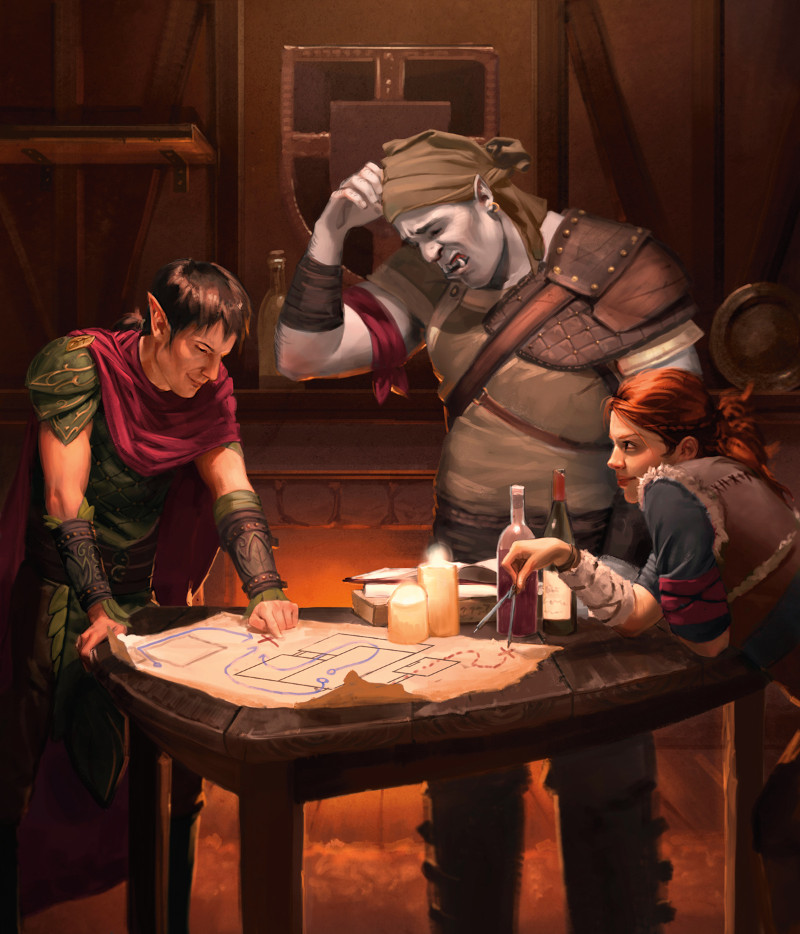

Races
Une visite dans l'une des plus grandes cités des mondes de D&D, que ce soit Waterdeep, la cité libre de Faucongris ou même Sigil, la cité des Portes, submerge les sens. On y entend des discussions dans de multiples langues. Les odeurs des différentes cuisines culturelles se mêlent aux émanations des rues bondées et des conditions sanitaires déplorables. Les bâtiments de diverses architectures et styles se côtoient et indiquent les origines variées des habitants. Et les gens eux-mêmes – des personnes de tailles, de formes et de couleurs différentes, habillées dans divers styles bariolés – représentent différentes races, des petits halfelins et robustes nains aux elfes sveltes et majestueux se mélangeant avec de nombreuses ethnies humaines.
Éparpillés parmi ce peuple bigarré, on peut rencontrer des membres d'une race vraiment exotique : un puissant drakéide ici, traçant son chemin dans la foule ; là, un tieffelin narquois espionnant depuis les ombres de la malice dans les yeux. Un groupe de gnomes rit aux éclats, alors que l'un d'eux active un ingénieux jouet de bois, qui se meut de lui-même. Demi-elfes et demi-orcs travaillent et vivent aux côtés des humains, sans appartenir pleinement aux races de leurs parents respectifs. Et par ici, à l'écart des rayons solaires, se dresse un drow solitaire, un fugitif des mondes sous-terrains, tentant de tracer sa voie dans un monde qui craint les membres de sa race.
← Voir le menu à gauche pour naviguer.
Choisir une race
RACES NON COMMUNES
Certaines races sont rares. Elles n'existent pas dans tous les univers de D&D, et même lorsqu'elles existent, elles sont moins répandues que les nains, les elfes, les halfelins et les humains.
Dans les villes cosmopolites du multivers D&D, la plupart des gens ne seront pas surpris de rencontrer des membres des races même les plus exotiques. Mais dans les petites villes et les villages qui parsèment la campagne les choses sont différentes. Les gens ordinaires ne sont pas habitués à voir des membres de ces races, et réagissent en conséquence.
Demi-elfe. Bien que beaucoup de gens n'aient jamais vu un demi-elfe, pratiquement tout le monde sait qu'ils existent. L'arrivée d'un demi-elfe étranger est généralement suivie de commérages dans son dos et de regards volés dans la salle commune, plutôt que de confrontations ou de curiosités ouvertes.
Demi-orc. Il est généralement prudent de supposer qu'un demi-orc es belliqueux et prompt à la colère, c'est pourquoi les gens se regardent aux abords d'un demi-orc inconnu. Les commerçants pourraient subrepticement cacher des biens de valeur ou des objets fragiles quand un demi-orc entre, et les gens sortiront discrètement d'une taverne, anticipant qu'une bagarre éclatera bientôt.
Drakéide. Il est facile de supposer qu'un drakéide est un monstre, surtout si ses écailles trahissent un patrimoine chromatique. Mais à moins que le drakéide ne commence à souffler du feu et ne provoque des destructions, les gens sont plutôt susceptibles de réagir avec prudence qu'avec de la peur pure et simple.
Gnome. Les gnomes ne ressemblent pas à une menace et sont capables de rapidement désarmer les soupçons avec leur bonne humeur. Les gens ordinaires sont souvent curieux au sujet des gnomes, et même s'ils n'en ont probablement jamais vu un avant, ils seront rarement hostiles ou craintifs à leur égard.
Tieffelin. Si les demi-orcs sont accueillis avec prudence, les tieffelins font l'objet d'une peur surnaturelle. Le côté maléfique de leur origine est clairement visible dans leur apparence, et pour la plupart des gens un tieffelin pourrait très bien être un diable venu tout droit des Neuf enfers. Les gens peuvent faire des signes de rejet lorsqu'un tieffelin approche, traverser la rue pour éviter de passer à proximité, ou fermer les portes d'une boutique avant qu'un tieffelin ne puisse y entrer.
Les humains sont les personnages les plus fréquents dans les mondes de D&D, mais ils vivent et travaillent aux côtés de nains, elfes, halfelins et d'innombrables autres espèces fantastiques. Votre personnage appartient à une de ces races. Toutes les races intelligentes du multivers ne sont cependant pas appropriées pour être incarnées par un joueur. Les elfes, les halfelins, les humains et les nains sont les races les plus communes pour composer un groupe dans une partie typique. Les autres races et sous-races sont moins fréquentes en tant qu'aventuriers.
Le choix de la race affecte de nombreux aspects de votre personnage. Il établit des qualités fondamentales qui vont marquer toute la carrière d'aventurier de votre personnage. Lorsque vous prenez cette décision, gardez bien à l'esprit le genre de personnage que vous voulez jouer. Par exemple, un halfelin pourrait être un bon choix pour un roublard sournois, un nain fait un bon guerrier rude, et un elfe peut être un parfait maître de la magie des arcanes. La race de votre personnage affecte non seulement les valeurs de vos caractéristiques et vos traits, mais fournit également d'importants repères pour la construction de l'histoire de votre personnage. La description de chaque race comporte des informations pour vous aider à jouer le rôle de cette race, sa personnalité, son apparence physique, les caractéristiques de sa société et les tendances raciales de son alignement. Ces détails sont des suggestions pour vous aider à réfléchir à votre personnage. Mais les aventuriers peuvent fortement différer de la norme de leur race. Dans ce cas, il est intéressant de se demander pourquoi votre personnage est différent ; cela vous sera utile pour réfléchir à l'historique et à la personnalité de votre personnage.
Traits Raciaux
La description de chaque race indique les traits raciaux communs aux membres de cette race. Les entrées suivantes sont présentes pour chacune des races décrites.
Augmentation de caractéristiques
Toute race ajuste une ou plusieurs caractéristiques du personnage.
Âge
Ce trait indique l'âge à partir duquel un membre de la race est considéré comme adulte, ainsi que son espérance de vie. Cette information peut vous aider à déterminer l'âge de départ de votre personnage en début de jeu. Vous pouvez choisir n'importe quel âge pour votre personnage, qui pourrait par exemple expliquer certaines valeurs de vos caractéristiques. Par exemple, si vous jouez un personnage jeune ou très vieux, l'âge pourrait expliquer une faible valeur de Force ou de Constitution, et un âge avancé pourrait justifier une forte Intelligence ou Sagesse.
Taille
Les personnages de la majorité des races sont de taille Moyenne, une catégorie de taille qui englobe des hauteurs d'en gros 1,20 m à 2,40 m. Quelques races sont de taille Petite (entre 60 cm et 1,20 m), et certaines règles de jeu les affectent différemment. La plus importante d'entre elles précise que les personnages de taille Petite ont des difficultés à manier des armes lourdes, comme cela l'est indiqué dans le chapitre Équipement.
Vitesse
Votre vitesse détermine la distance que vous pouvez parcourir lors des Déplacements et lors des Combats.
Langues
De par sa race, votre personnage peut parler, lire et écrire certaines langues. Le chapitre Personnalité et Historique énumère les langues les plus communes du multivers de D&D
Sous-races
Quelques races sont subdivisées en sous-races. Un personnage d'une sous-race possède les traits de la race « mère » en plus des traits de la sous-race choisie. Les relations entre les sous-races varient de manière importante selon les races et les mondes dans lesquels ils vivent. Par exemple, dans le monde de campagne de Dragonlance, les nains des montagnes et ceux des collines vivent ensemble en tant que clans différents d'un même peuple, alors que dans les Royaumes Oubliées ces peuples vivent dans des royaumes séparés sous les noms de nains d'écu et nains d'or, respectivement.
